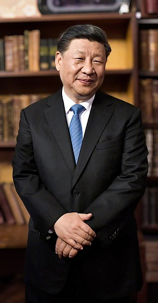

About Xi Jinping
Xi Jinping is the General Secretary of the Communist Party of China, the President of the People's Republic of China, and the Chairman of the Central Military Commission. He has been the paramount leader of China since 2012.
Prayers for Xi Jinping
May Xi Jinping lead China towards prosperity and harmony. May he be blessed with wisdom and strength to make wise decisions for the betterment of the Chinese people.
May Xi Jinping continue to inspire and guide the nation with his visionary leadership. May his efforts bring about positive changes and improvements in various aspects of Chinese society.
More Information
To learn more about Xi Jinping and his contributions, visit the official website of the Communist Party of China or refer to reliable sources for accurate and up-to-date information.
